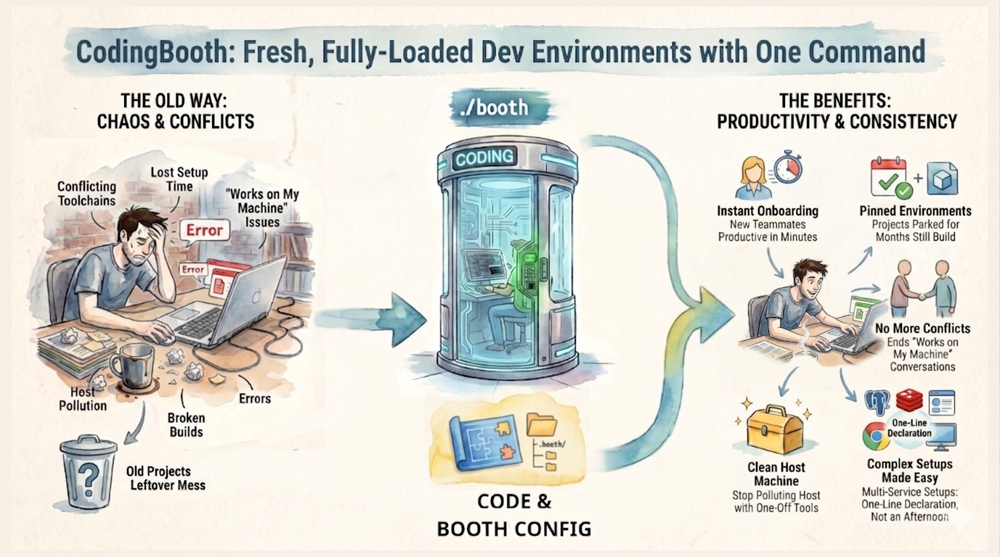
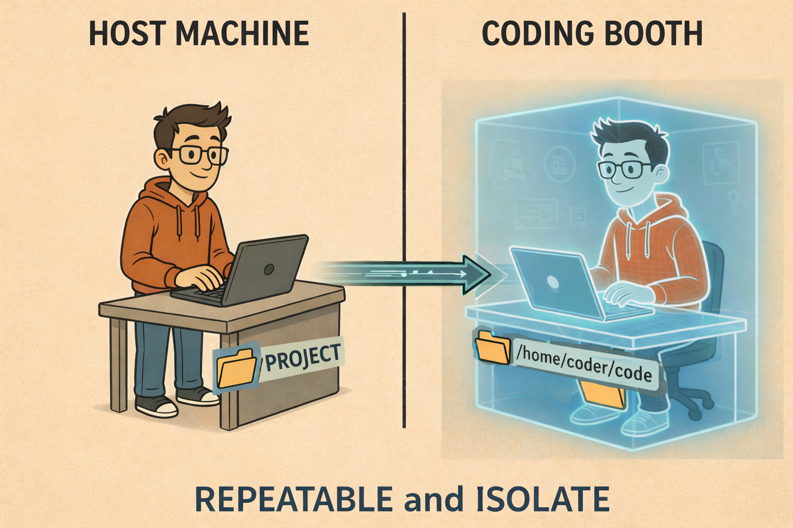
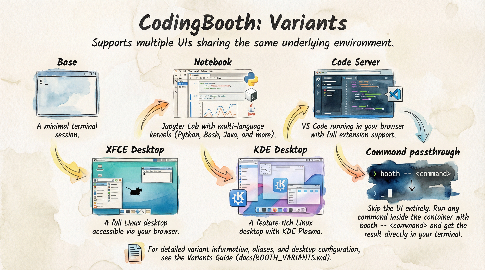

18 June 2026 · Nawa Man
Isolation, repeatability, shareability, and usability — the four things a booth gives every project.

CodingBooth improves your — and your team's — development experience by eliminating the “it works only on my machine” problem. It does this by giving every project its own fully isolated environment.
I've written before about why the “works on my machine” problem keeps happening. This post takes a different cut: the four promises a booth makes to every project it wraps. Get all four at once and the environment stops being a variable.
Prefer to watch? Here's the same idea as a YouTube Shorts video.
Any activity inside a project stays inside its isolated environment and never touches your host
system. Each project gets its own dedicated booth, so you can work on several projects at once
without conflicts — no shared global runtime, no PATH entry bleeding from one project
into the next.
That same isolation is what makes a booth a safe place to experiment. Install a sketchy CLI, let an
AI assistant run go install that@latest, try a risky upgrade — if it goes wrong, you
throw the booth away and start clean. Nothing leaked onto your machine, and no other project
noticed.

A booth is created exactly according to its definition, which makes it fully repeatable. It's spun up when you need it and thrown away when you're done, so you always get the same consistent environment — not “close enough,” but the same image with the same tools at the same versions.
Because the definition is plain text living in .booth/, it can be version controlled
right alongside your code. The environment changes when the repo changes, reviewed in the same pull
request as everything else.
# .booth/Boothfile
setup java+maven
setup claude-codeTwo lines, and the environment is pinned. Run ./booth today or in two years and you
get the same toolchain — no drift, no “it used to build.”
Because the definition is shareable, every team member gets an identical environment. Clone the repo, run the booth, and you're at parity with the rest of the team — same versions, same CLIs, same defaults. Onboarding goes from a day of platform-specific debugging to a single command.
git clone <repo> && cd <repo> && ./boothThis is the move that actually retires “works on my machine.” The environment isn't described in an onboarding wiki that nobody updates — it is the repo. New teammates, future-you reviving a dormant project, students handed a workshop repo: everyone runs the same booth.
All of this is delivered in a highly usable way. You can interact with the booth through a terminal, browser-based VS Code, a Jupyter notebook, or even a full Linux desktop — same environment underneath, different lens on top.

CodingBooth also handles file permissions seamlessly by matching your host user ID and group ID.
Every file you create or edit inside the booth is owned by you on the host — no chown dance, no root-owned artifacts left behind.
And the booth definition itself is intuitive: it ships pre-loaded with useful built-in setups and
templates, plus an easy-to-use configuration tool. You rarely start from a blank file — you pick
what you need and let the tool write the .booth/ folder for you.
booth configIsolation keeps your host clean. Repeatability keeps the environment honest. Shareability gets your whole team to parity. Usability makes it something you actually want to live in. Each one is useful on its own; together they're what makes “works on my machine” a problem you stop having.
Installing CodingBooth is one command:
curl -fsSL https://codingbooth.io/install.sh | bashStart using CodingBooth in your project today — and thank me later.
Happy coding!
Nawa Man
Comments